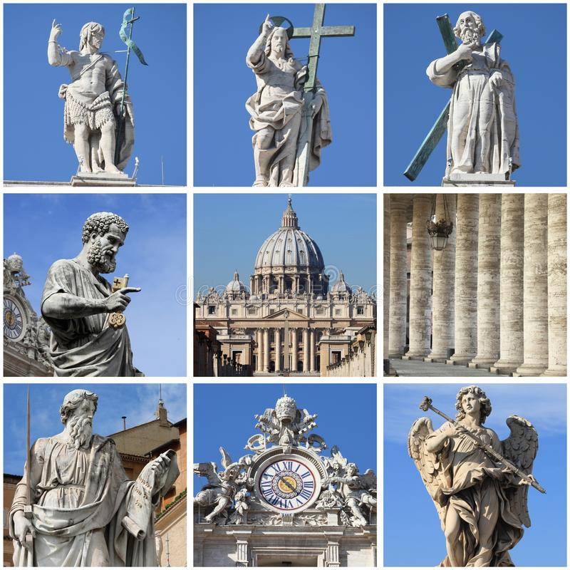

Vaticano

Ватикан — государство-город, лежит на правом берегу Тибра и включает в себя суверенную государственную папскую область в
пределах Рима, образованную вместо упраздненного в 1870 году при объединении Италии папского государства. В Ватикане
проживают около 1000 жителей, из них половина - граждане государства, среди которых - всего двадцать пять женщин. Кроме
того, в Ватикане служат еще 3000 человек. Таким образом, Ватикан - самое маленькое государство в мире, но вместе с тем
это центр управления католической церковью, к коей причисляют себя около миллиарда верующих на всех континентах.
Название города-государства произошло от названия холма, на котором он находится – Vaticanus. По периметру территория
Ватикана окружена средневековыми стенами. Ежегодно в Ватикан приезжают тысячи туристов и паломников. Все они хотят
получить папское благословение и увидеть своими глазами уникальные памятники архитектуры и истории. Двадцатипятиметровый
египетский обелиск возвышается по центру самой большой площади Рима – площади Святого Петра. Дворцы Ватикана образуют
крупнейший музейный комплекс в мире. В их многочисленных галереях, выставочных залах, внутренних двориках находятся
бесценные произведения искусства. Это богатство собиралось на протяжении многих веков каждым римским понтификом. В
библиотеке Ватикана хранится богатейшее собрание книг и древних манускриптов. В Сикстинском зале находится рукописная
Библия, датированная IV веком. Одной из жемчужин Ватикана является Сикстинская капелла, она была построена архитектором
Джованнино де Дольчи (Giovannino de’ Dolci) в конце XV века по приказу папы Сикста IV. Изнутри купол капеллы расписан
знаменитыми фресками Микеланджело, являющимися яркой достопримечательностью Ватикана. Сикстинская капелла постоянно
открыта для посещения, кроме того времени, когда проходит процедура избрания нового папы. По традиции, если собрание
кардиналов приходит к единому мнению, то о результатах голосования сообщает столб дыма из трубы капеллы от сжигаемых
бюллетеней. Причём если решение не принято, то цвет дыма черный, а если принято, и папа избран, то белый. Сады Ватикана
являются одними из самых охраняемых мест в мире. Это самые красивые сады в Европе и место, где можно
прекрасно отдохнуть, конечно, только избранным, в тишине и зелени.
← На главную